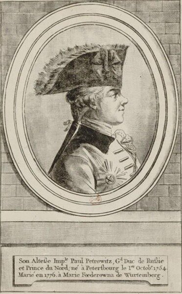

Теперь другое уж моленье,
И смысл ектении таков: -
Избавь Россию, Провиденье,
От прогрессивных дураков.
Щербина. Две ектении.
Не поймите меня превратно, будто я пóходя могу решить такой сложный вопрос, который поставил в заголовке поста. Конечно же нет. Я приведу лишь несколько соображений по данной теме, которые возникли в процессе размышлений над приведенным выше рассказом.

С самого начала следует сказать, что годы правления Павла характеризовались активными действиями русского флота как в Средиземном море, так и на северных морях. Из Петербурга велось руководство флотами практически на всех европейских театрах военных действий. Были проведены замечательные морские операции адмирала Ушакова, вошедшие в летопись славных побед русского морского оружия. Совместные действия русского и турецкого флотов, такие редкие в нашей общей истории, также оставили для памяти потомков несколько ярких эпизодов. Но возникает вопрос, решить который непросто: эти победы были результатом полководческого таланта высшего руководства России при Павле, или же они стали следствием потенциала, накопленного еще при матери императора.
Е.М. Лупанова (Европейский университет в Санкт-Петербурге) считает, что «рассматривая деятельность императора Павла I во главе морского ведомства (мы помним, что Павел сохранил за собой должность генерал-адмирала - g._g.), нельзя выделять период его правления как резкий контраст по сравнению с предыдущим или последующим царствованием.» Не совсем понятное заключение из тех фактов, которые, без сомнения, известны Е.М.
Кратко окинем взглядом ближайший предшествующий период нашей морской истории. Более тридцати лет правления Екатерины II стали годами возрождения русского флота после периода почти сорокалетнего застоя, в течение которого были утрачены практически все военно-морские традиции Петра. Екатерина после маневров флота в 1765 году писала:
«У нас в излишестве кораблей и людей, но нет ни флота, ни моряков...Все выставленное на смотр было из рук вон плохо. Надобно сознаться, что корабли походили на флот выходящий каждый год из Голландии для ловли сельдей, а не на военный.»
Корабли строились из рук вон плохо: из сырого леса, на гвоздях и деревянных нагелях вместо сквозных болтов, с использованием слоев шерсти вместо медной обшивки для предотвращения воздействия морских червей. Такелаж был из гнилых и непрочных канатов. Качество литья пушек было очень низкое, что приводило к частым их разрывам. Екатерине удалось ликвидировать большинство из этих проблем и создать флот, способный с честью поддерживать объявленную императрицей политику вооруженного нейтралитета. Было воссоздано общее управление флотом. Коренным образом изменились профессиональные качества личного состава флота, в первую очередь его офицеров. Постепенно удалось сократить пьянство и мордобой на кораблях, укрепить дисциплину, реорганизовать систему материально-технического снабжения кораблей. Однако на всем протяжении указанной эпохи сохранялись многочисленные финансовые злоупотребления, не позволявшие придать стабильность флоту и поддерживать на нужном уровне его боеготовность. Корабельные леса, переданные от Адмиралтейств-коллегии в ведомство директора экономии варварски расхищались. Передача судостроительных верфей коммерческого флота в ведение городских властей Петербурга привела фактически к ликвидации самостоятельного купеческого судостроения в России.
Чтобы в целом охарактеризовать изменения на флоте, прошедшие за годы екатерининского правления, можно сослаться на мнение Ф.Ф. Веселаго:
«Получив флот находящийся почти в агонии, и сознающий бессилие, государыня оставила его, хотя со многими материальными недостатками, но мощным по духу, полным кипучей жизни, пользующимся заслуженною боевою славою и пронесшим с честию русский флаг по всем морям Европы. При участии возрожденного Екатериною флота, Россия возвратила себе свое древнее «Русское» море, и на юге приобрела естественную морскую границу.
Однако продолжительные войны привели к истощению материальных ресурсов, в том числе и средств, которыми располагал флот. Спешная постройка, вооружение и снаряжение большого числа кораблей обычно к весьма близкому сроку привели к снижению требований к их качеству. Тот же Ф.Ф.Веселаго писал:
«Екатерина, оставив своему преемнику флот, пользующийся заслуженною славою, и имеющий превосходный наличный состав опытных и сведущих моряков, вместе с тем, оставила ему и огромный труд приведения в больший порядок всей материальной части морского ведомства и исправления массы вкравшихся беспорядков и упущений, незаметных для постороннего глаза, но заражающих весь организм целого ведомства и ослабляющих силу флота.
Что же представляли собой эти «вкравшиеся беспорядки и упущения» и какие меры принял новый император для их искоренения?
В области кораблестроения.
В одном из первых указов Павла Адмиралтейств-коллегии было сказано:
«С восшествием Нашим на прародительский престол, приняли Мы флоты в таком ветхом состоянии, что корабли составляющие оные, большею частию оказались, по гнилости своей на службу неспособными».
Пользуясь союзом с турками, удалось переманить на русскую службу из Константинополя двух отличных кораблестроителей братьев-французов Ле Брюн де Сен Катрин, благодаря искусству которых турецкие корабли своими морскими качествами далеко превосходили наши черноморские.
За несколько лет царствования Павла I на Балтике и Черном море было спущено на воду 17 линейных кораблей, 8 фрегатов, начата постройка еще девяти корпусов (5 кораблей и 4 фрегата). В Петербурге была выстроена новая верфь, получившая название Нового Адмиралтейства. Устаревшие деревянные постройки в портах постепенно заменялись каменными. Возводились специальные здания для флотских экипажей.
В области корабельных лесов.
Мы уже отметили, что Екатерина вывела эти леса из ведения Адмиралтейств-коллегии. В основу этого решения была положена разумная, в целом, мысль, что леса эти составляют государственное имущество, поэтому должны служить не только для кораблестроения, но составлять один из источников государственного дохода. Однако эта верная идея, при осуществлении ее недобросовестными исполнителями (беда всех русских благих начинаний) привела к повсеместному истреблению лесов. Адмирал де Рибас, строитель Одессы, назначенный управляющим Лесным департаментом, после осмотра мест заготовки корабельного леса доносил Павлу:
«состояние лесов превосходит всякое воображение: повсеместное оных опустошение распространилось до того, что дубовые леса сделались редки и те в отдаленности».
Для сохранения оставшихся лесов и разведения новых в царствование Павла были приняты серьезные меры: надзор за корабельными лесами был возвращен Адмиралтейств-коллегии. Ни на какие другие нужды, кроме кораблестроения, вырубка из этих лесов не дозволялась: было приказано в продажу за границу, без именного указа, «ни единого дерева не выпускать». Для заведывания лесами при интендантской экспедиции учрежден Лесной департамент, а для подготовки квалифицированных лесничих при Морском кадетском корпусе был открыт «форшмейстерский класс». По рекам Неве , Волхову, Мсте и Ловати, а также по северному и южному берегам Финского залива планировалось приступить к разведению дубовых лесов. (Сказать, что Павел думал только о сиюминутных проектах, нельзя: созревание строевого леса продолжается десятки лет.) Заготовленный ранее лес велено было рассортировать и разложить в сараи, а запасы, которые предполагалось сохранять на много лет, указано было «затопить в воду.»
В области базирования флота.
В портах России того времени гнили не только леса, но и корабли. Установившийся порядок содержания судов не способствовал их сохранению в хорошем состоянии. Поставленный на зимовку в гавань корабль выходил из подчинения своего капитана и поступал в распоряжение портового начальства. Корабль стоял всю зиму неразгруженным, с артиллерией и находившимися в трюме запасами.
Павел приказал суда разгружать, снимать мачты, покрывать суда крышами, проветривать палубы и трюмы. Командир корабля обязывался отныне наблюдать за работами по постройке, тимберовке и мелкому ремонту.
В портовых складах имели место почти открыто большие злоупотребления: имущество списывалось в расход в бóльшем против фактического количестве, а образующиеся излишки тайно вывозились на продажу. Прием припасов от подрядчиков происходил без всякого свидетельства, так что содержатели складов «записывали вдвое и втрое более, и потом делясь с поставщиком, казенный интерес похищали» (откаты, однако).
Для прекращения этих злоупотреблений Павел дал указание все представляемое в порт подрядчиками принимать по освидетельствованию особыми комиссиями, которые, помимо этого, должны были каждые четыре месяца проверять наличии имущества на складах.
До боли знакомо все это. Пожалуй, из всех правителей российских, только Екатерина философски снисходительно относилась к подобным слабостям служащих, шутливо выражаясь:
«Меня обворовывают точно так же как и других; но это хороший знак и показывает, что есть что воровать».
О других реформах Павла, повлиявших на состояние российского флота, поговорим в следующий раз.